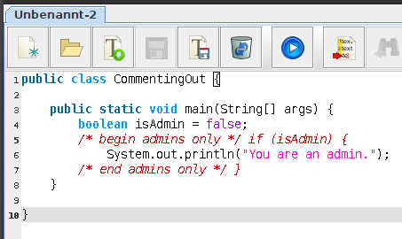
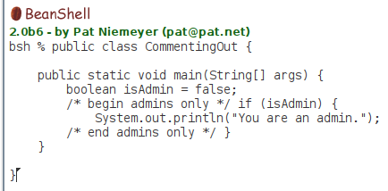
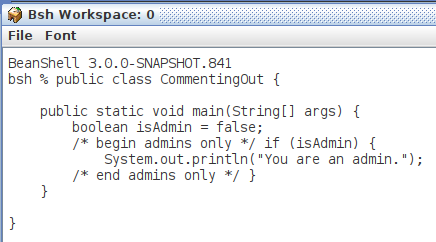

Nachdem die kritische Lücke Trojan Source veröffentlicht wurde habe auch ich geprüft, ob die sQLshell oder dWb+ dadurch verwundbar wären.
Die sQLshell erlaubt es, SQL-Statements an eine Datenbank zur Verarbeitung zu schicken. Daher stellt sich die Frage, ob man entsprechende Versuche der Manipulation mit eingestreutwen BiDi-Unicodes erkennen könnte. Der folgende Screenshot zeigt, dass diese Codes in der sQLshell als Pseudozeichen dargestellt und nicht interpretiert werden. Man vergleiche auch mit dem nächsten Screenshot, der denselbemn Inhalt in Gedit zeigt:
 SQL-Script in sQLshell
SQL-Script in sQLshell
 SQL-Script in Gedit 2.36.2
SQL-Script in Gedit 2.36.2
Das hier gesagte gilt nicht nur für den in der sQLshell eingebauten SQL-Editor, sondern selbstverständlich auch für das Plugin, das die sQLShell um einen MDI-Editor für SQL-Skripte erweitert.
Die sQLshell verfügt - genau wie dWb+ auch über einen Java-MDI-Editor, realisiert ebenfalls als Plugin. Diese Plugins sollen hauptsächlich bei der Erstellung von BeanShell-Skripten unterstützen.
Wie man im nächsten Screenshot sieht, werden die eingestreuten Control-Characters hier zwar nicht als Pseudozeichen hervorgehoben, allerdings arbeitet zumindest das Syntax-Highlighting korrekt und markiert die gesamte Zeile 5 als auskommentiert.

Java-Beispiel in Java-MDI-Plugin-EditorHierin gleicht es Gedit - auch diese Anwendung weist durch das Syntax-Highlighting darauf hin, dass hier etwas nicht stimmt...
Es existiert noch ein weiteres Plugin, das derzeit nicht - oder nur mit äußerster Vorsicht benutzt werden sollte: BeanShellREPL.
Hier wird die Beanshell-Konsole in die Anwendung eingebunden, um schnell per BeanShell Statements zur Ausführung absenden zu können. Diese Konsole arbeitet ohne jegliches Syntax-Highlighting und der problematisache Code ist - da auch die Control-Characters komplett unsichtbar bleiben - nicht als problematisch erkennbar:

Java-Beispiel in BeanShell-KonsoleDaran ändert auch die Verwendung der aktuellsten auf GitHub verfügbaren SNAPSHOT-Version nichts, wie man im folgenden Screenshot erkennen kann:

Java-Beispiel in BeanShell-Konsole Version 3.0.0-SNAPSHOTIch habe daher ein entsprechendes Ticket eingestellt.
Artikel, die hierher verlinken
Neuigkeiten zu dWb+
16.07.2022
Nach meinem letzten Artikel zum Thema dWb+ ist bereits einige Zeit vergangen - daher hier ein kurzes Update mit einem Ausblick auf die nächste Version.
Release der Gegenmaßnahmen gegen Trojan Source und Trojan SQL
04.02.2022
Mit Version 1.4.0 wurden die Gegenmaßnahmen gegen Trojan Source und Trojan SQL endlich in einer Release auf Repsy zur Verfügung gestellt.
Fork der BeanShell wegen Trojan Source
02.01.2022
Es gibt inzwischen einen von mir erstellten Fork des originalen Repository, in dem ich die Komponente zur Darstellung der Konsole gegen die ausgetauscht habe, die in der sQLshell in den Plugins MDIJavaEditor und MDISqlEditor zum Einsatz kommt - dadurch wird wenigstens durch das Syntax-Highlighting auf problematische Stellen im Code hingewiesen.


Tags
Android Basteln C und C++ Chaos Datenbanken Docker dWb+ ESP Wifi Garten Geo Git(lab|hub) Go GUI Gui Hardware Java Jupyter Komponenten Komponenten Git(lab|hub) Links Linux Markdown Markup Music Numerik PKI-X.509-CA Python QBrowser Rants Raspi Revisited Security Software-Test sQLshell TeleGrafana Verschiedenes Video Virtualisierung Windows Upcoming...
Neueste Artikel
-
 Tail -f ist eine schlechte Idee
Tail -f ist eine schlechte Idee
In meinem $dayjob musste ich vor einigen Monaten einmal einen Bug untersuchen. Das hat eine (für mich) überraschenende Tatsache ans Licht gebracht und mich wieder daran erinnert, was ich zum Thema Forensik gelernt habe: Man braucht Zeit und Ruhe, um das Problem und die hinterlassenen Zeichen gründlich zu untersuchen und so zum Kern des Problems vorzudringen.
Weiterlesen... - Neues Interface für Plugins
Während der Umstellung meiner Codebasis auf Java in der Version 17 schien es kurzzeitig so zu sein, dass diese Umstellung einen deutlich höheren Aufwand benötigen würde als ursprünglich angedacht: viele der Plugins der sQLshell funktionierten nicht mehr.
Weiterlesen... - Postgres Explain Visualisierung als Plugin
Durch meine Beschäftigung mit Postgres als Testhäschen für die Unterstützung neuer Datentypen in der sQLshell musste ich mich natürlich auch mehr und tiefgreifender mit Postgres selbst auseinandersetzen.
Weiterlesen...
Manche nennen es Blog, manche Web-Seite - ich schreibe hier hin und wieder über meine Erlebnisse, Rückschläge und Erleuchtungen bei meinen Hobbies.
Wer daran teilhaben und eventuell sogar davon profitieren möchte, muß damit leben, daß ich hin und wieder kleine Ausflüge in Bereiche mache, die nichts mit IT, Administration oder Softwareentwicklung zu tun haben.
Ich wünsche allen Lesern viel Spaß und hin und wieder einen kleinen AHA!-Effekt...
PS: Meine öffentlichen GitHub-Repositories findet man hier.